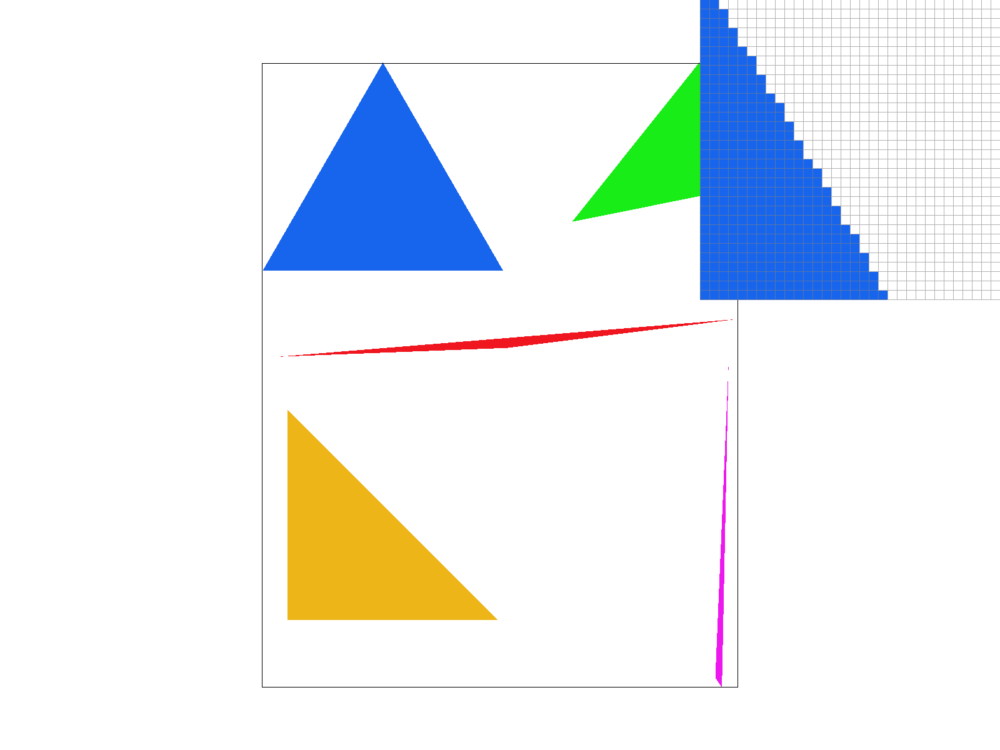
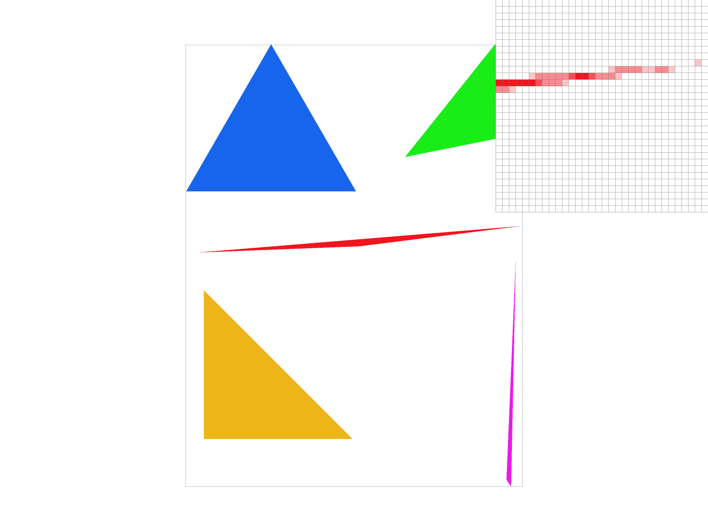
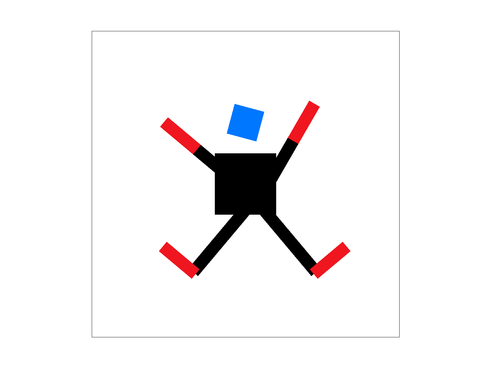
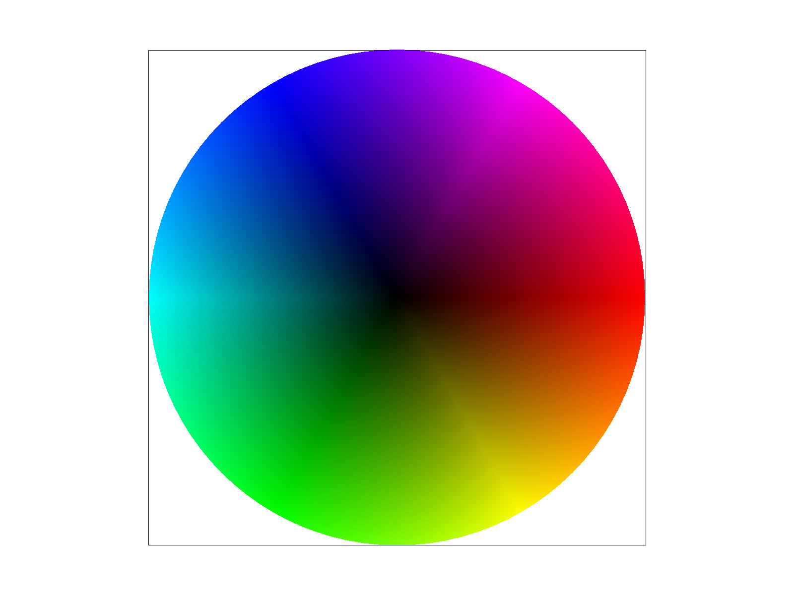
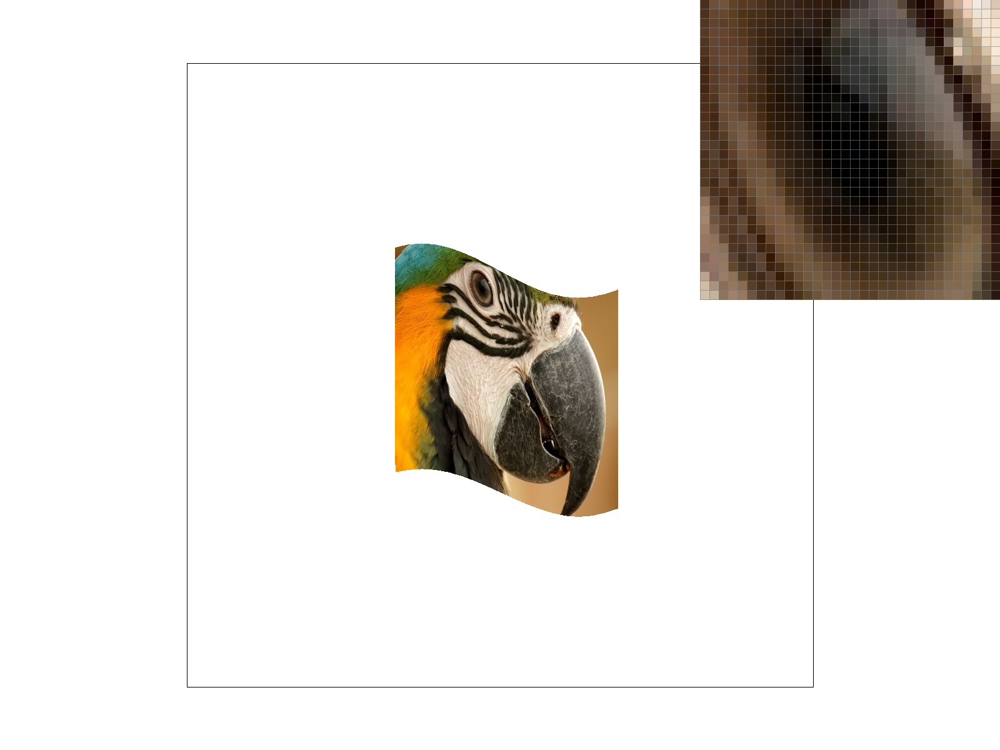
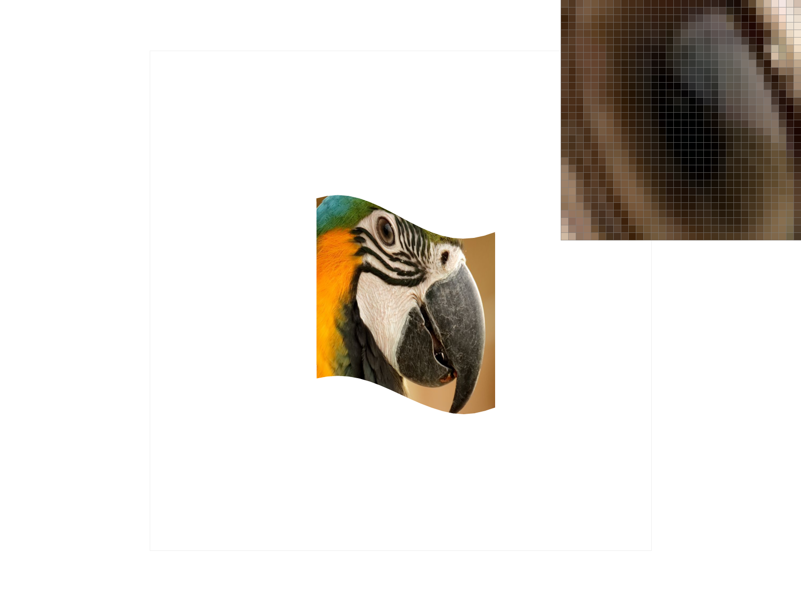
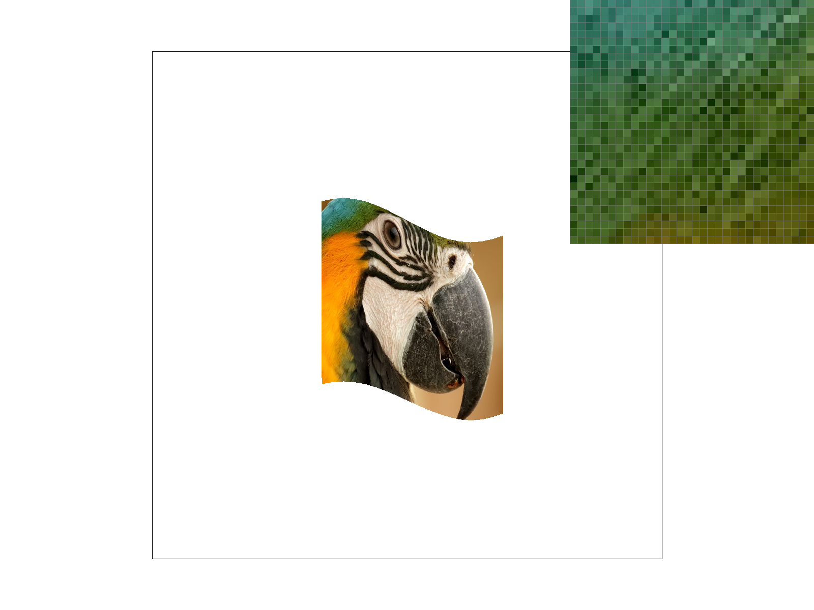

Overview: Give a high-level overview of what you implemented in this homework. Think about what you've built as a whole.
Share your thoughts on what interesting things you've learned from completing the homework.
In this homework I've implemented a rasterizer that can draw triangles which then in turn can be used to create more complex images like snowflakes
or a 3d cube as seen in the basic tests. A technique I used to better this process was supersampling where I took multiple samples within a pixel
instead of taking one sample per pixel. This yielded more smoother triangle edges and more connected pixels. I found this process to be pretty cool
as just with triangles so many cool images and shapes can be created. Also seeing the triangles look better when I implemented supersampling was rewarding.
Furthermore, I also used barycentric coordinates to more smoothly blend in colors within my triangles which leads into my implementaion of texture mapping.
To do this, I made use of both bilinear and nearest pixel sampling to interpolate from 4 neighbors in the case of bilinear and approximating a pixel’s
color in the case of nearest where it takes on the color of the nearest pixel in the texture map. Building upon this, I added level sampling which help
further fight against aliasing in my texture mapping. These methods were a bit more abstract to me as the math behind it was a bit harder than the 3 line tests
but otherwise I enjoyed seeing the pngs being mapped onto nonflat surfaces. I think the most interesting thing I've learned from this homework is the
idea of supersampling. I never thought drawing triangles could be so complex as you are splitting up pixels (which before this class I percieved to be the smallest unit
of measurement) and averaging it out within the sample.
Task 1: Drawing Single-Color Triangles
Walk through how you rasterize triangles in your own words.
To rasterize triangles, we can utilize the implicit line equations given by 3 pairs of
vertices on the triangle. We can then sample each possible point on the screen space to see if the
pixel should be filled in. To achieve this, we can plug in each possible pixel into our implicit line equations to see
if the output is greater or equal to zero. A pixel should be filled in if it is greater than zero
(i.e. it is inside the triangle or on its edge) or it should not be filled in if it is less than zero (i.e. it is outside the triangle).
And after testing all the pixels we have drawn or rasterized the triangle.
Explain how your algorithm is no worse than one that checks each sample within the bounding box of the triangle. The bounding box of the triangle is defined as the smallest rectangle that can be drawn whilst ensuring that the entire triangle is within it.
The bounding box algorithm would have to scan over the entire grid to find out where the triangles are in order to
create amply sized bounding boxes. Then the bounding box algorithm would have to sample each point within the bounding box.
My algorithm on the other hand just scans each sample and processes it as either in or outside the triangle to determine whether to color it.
This means the number of scans and computations that my algorithm is performing is less than or equal to the bounding box algorithm as the
bounding box algorithm may have to do less computation because it knows where the triangles are but it has to do more scanning to first create
these boxes.
Show a png screenshot of basic/test4.svg with the default viewing parameters and with the pixel inspector centered on an interesting part of the scene.

This image is interesting as if you are not using the pixel zoom, the blue triangle looks perfectly fine and the edges look straight. However, using the pixel zoom, we can clearly see jaggies on the triangle’s edges.
Task 2: Antialiasing by Supersampling
Walk through your supersampling algorithm and data structures.
My supersampling algorithm is quite similar to my regular sampling algorithm but there are a few key differences.
For one, I not only iterate over all the grid squares, but within each grid square I also iterate over a NxN segment using a double for loop.
I also make use of the sample_buffer to keep track of all the pixel fragments I'm sampling. Then I utilize resolve_to_framebuffer() to add up all the samples
corresponding to a single pixel and average it out. To make this work, I also made a change to fill_pixel which now takes in the variables a and b
which act as indexers into the NxN segment within each square. Other than that, I'm still using the 3 line test but I'm just testing more points
and storing their colors within a larger sample_buffer.
Why is supersampling useful? What modifications did you make to the rasterization pipeline in the process?
Supersampling is useful as we can gather information (or samples) from a higher resolution and use the information to create a more accurate and smoother rasterized triangle at the actual resolution the triangle is displayed in.
I modified the Rasteriztion part of the pipeline as instead of sampling just once, I sample sample_rate number of times for each pixel. I also modified the Fragmentation Processing as shading the pixels is not as simple as just copying it from the sample_buffer but rather adding up all the corresponding samples to a pixel and then averaging it.
Explain how you used supersampling to antialias your triangles.
Supersampling helped me antialias my triangles because it allowed me to sample different locations within a pixel box to get a more precise color or fill on the entire pixel box. For example, without supersampling, we might run into a scenario where (.5,.5) is not within the triangle but (.75,.75) is. So using a sample rate of 4,
we can downsample to fill the pixel but at a color intensity of 25% whereas before, the pixel would not be filled at all.
Pictured below are various pixel zooms with varying sample rates in basic test 4
A zoom on the red triangle’s corner which displays a clear disconnection of a corner fragment when sample rate is 1.

A zoom on the red triangle’s corner which displays a relatively smoother corner with still a bit of disconnection when the sample rate is 4.
Finally a zoom on the red triangle’s corner which displays a clean corner with smoother edges that features essentially zero disconnection when the sample rate is 16.
Why are these results being observed?
These results are being observed as supersampling will average out pixels that are slightly within a
triangle such that the color being observed is proportional to the amount the pixel is actually within the triangle.
This explains why we observe lighter shades of red, especially at the corners which makes sense as these points would be
least within the triangle.
Task 3: Transforms
Updated verision of cubeman
I wanted to make a jumping motion so I rotated the left and right arms by 40 degress and 320 respectively to get them up in the air.
I also then translated the legs out so they also seem like they are in the air. I then scaled each limb to make the arms and legs connected.
I had a version where the head was also connected but I found the detached head to be quite charming so I left it as is.
I also changed the colors a bit so it looks like he is wearing black clothes, has red limbs, and a blue head.

My cubeman is quite happy that his head GSI is Sriram.
He is jumping with joy! Look at him go!
Task 4: Barycentric coordinates
Explain barycentric coordinates in your own words and use an image to aid you in your explanation.
Barycentric coordinates are a weighted equation used to interpolate color within a triangle. There are 3 weights (alpha, beta, and gamma) which represent 3 colors at 3 vertices.
One vertex may represent the color red, another may represent blue, and the last one may represent green. To actually compute the weights, we can split up
the triangle into three subtriangles consisting of two vertices and a sampled point and compute the area proportional to the entire triangle.
We then sample at each pixel within the triangle, figure out the weights and multiplying them by their respective color to get the interpolated color of the pixel.
Color wheel and aiding image

Screenshot of svg/basic/test7.svg with default viewing parameters and sample rate 1.
A triangle with blue, red, and green colored vertices. Point V is interpolated between the blue and green vertices hence the tealish color.
Task 5: "Pixel sampling" for texture mapping
Explain pixel sampling in your own words and describe how you implemented it to perform texture mapping. Briefly discuss the two different pixel sampling methods, nearest and bilinear.
Pixel sampling is the process by which we use mipmap color vectors to interpolate (using bilinear) or approximate (using nearest) the colors that will actually be mapped onto a different surface like a 3D model. I implemented this to perform texture mapping by converting from texture space (u,v) to screen space (x,y) and utilized the get_texels() function to figure out what color maps to screen space from the texture map.
Bilinear sampling makes use of 4 neighbors and uses these neighbors to linearly interpolate the color of the given pixel. This is done by using the lerp function to interpolate horizontally and then vertically hence the name bilinear as we interpolate in two directions.
Nearest sampling on the other hand just makes use of 1 neighbor and simply copies it colors rather than interpolating colors with multiple neighbors.
Side by side comparison of a Parrot’s eye (Nearest vs Bilinear with varying sample rates)
Nearest with Sample Rate of 1.

Bilinear with Sample Rate of 1.
Nearest with Sample Rate of 16.

Bilinear with Sample Rate of 16.
Comparison
When comparing the eyes at a sample rate of 1, the bilinear sampling is noticebly better as the eye outline are is more smooth while the nearest sampling displays a lot more rough edges and uneven coloring.
The top right sections of the eyes display this the best as the nearest sampling is more pixelated and the triangular light reflection is also much more jagged compared the bilinear where its smoother and has more smoothly bended colors.
The difference between the eyes at sample rate of 16 is almost nonexistent however.
One slight possibly difference I can point out is that the bilinear eye coloring is a bit better in some places like the top left corner but other than that, the supersampling seems to mask the notable performance difference quite well.
Analysis of Nearest vs Bilinear
As for when there will be a difference between the two, it seems like the more detail and edges there are, the worser nearest performances in comparison to bilinear.
Below I picture another example where bilinear clearly outperforms nearest sampling. Since a bird has thousands of feathers, trying to retain all the details should be hard hence why nearest performs noticably worse.
Bilinear is better at capturing these nuances as it takes in more data and interpolates colors.
On the other hand, if there was an image with few colors and not too much detail then nearest would capture most of the detail as the picture itself is not very detailed anyways.
One more scenario in which nearest would perform similarly to bilinear is when the mapping from screen to texture space is one to one which is to say when nearest sampling is computed, each pixel texel gets mapped perfectly onto the
screen space as its a bijection.
Bird’s feather comparison

A pixel zoom on a feather patch with nearest sampling and a sample rate is 1.
A pixel zoom on a feather patch with bilinear sampling and a sample rate is 1.
Task 6: "Level Sampling" with mipmaps for texture mapping
Explain level sampling in your own words and describe how you implemented it for texture mapping.
Level sampling is a process used to figure out the precise mipmap level we want to use to represent a pixel of varying
length from the camera. For example, if the pixel is far away, we don't want to use a level 0 mipmap to represent it as
we would get aliasing as its trying to map a high definition resolution onto a very small pixel.
I implemented level sampling by computing the rate of change in texture space (u,v) relative to
the screen space (x,y) by plugging in (x+1,y) and (y+1,x) into the barycentric coordinates to get
(dxu,dxv) and (dyu, dyv). Afterwards I got the max, and took the log of that to get the desired mipmap level.
I then passed this level into whatever sampling/pixel sampling method.
was chosen.
You can now adjust your sampling technique by selecting pixel sampling, level sampling, or the number of samples per pixel. Describe the tradeoffs between speed, memory usage, and antialiasing power between the three various techniques.
The general tradeoff is that increasing antialiasing will worsen your memory usage and speed. For example, if we supersample triangles, the time it takes for it to render is a lot longer. The resulting image
as a result is a lot better and smoother since we've done more computation in order to average out color samples.
This is of course at the expense of our memory usage and speed as we need to store more samples into our sample_buffer and our draw function
becomes slower as there is more computation to do.
Side by side comparison of a cool grid pattern I found (Nearest vs Bilinear with varying levels)